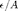
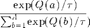
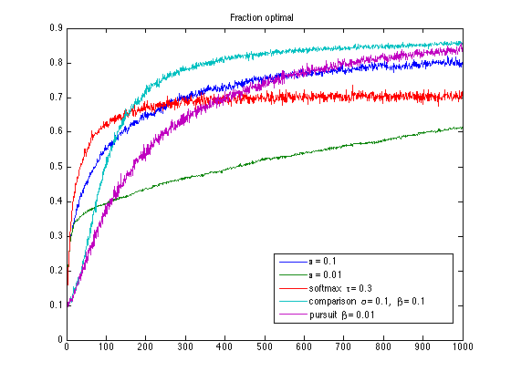
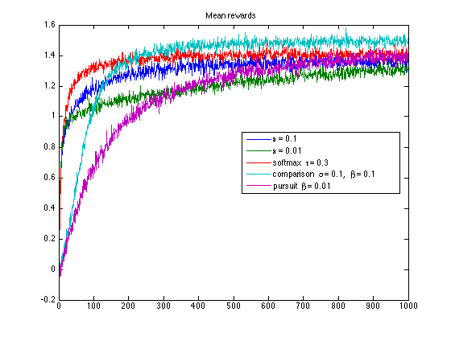
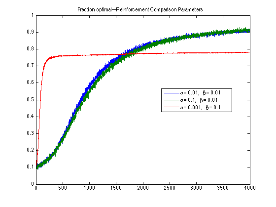
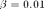
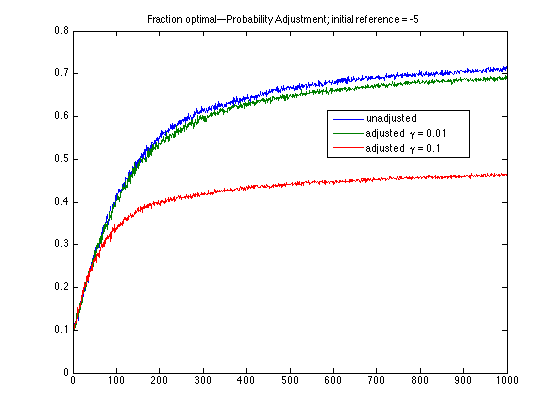
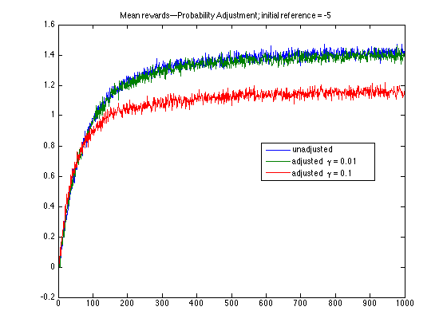
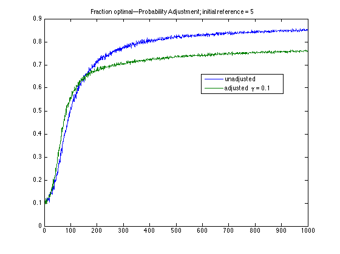
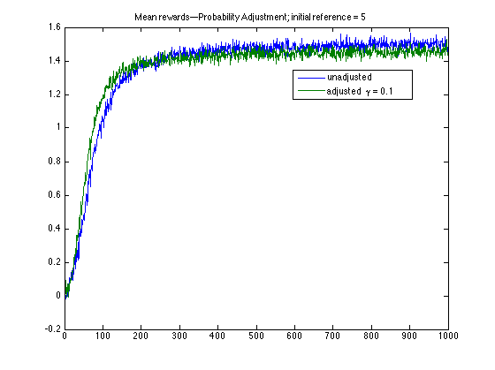

Banditology
We explore various n-armed bandit algorithms presented in chapter 2 of Sutton and Barto's book Reinforcement Learning: An Introduction.
The n-armed bandit is a basic problem in reinforcement learning which posits the exploration-exploitation tradeoff. We have a slot machine with n levers. Pulling a lever generates a stochastic quantity of reward. Suppose that some levers generate, on average, more reward than others. The goal is to generate the greatest cumulative reward.
In these examples, the player has no prior knowledge of the levers. As the player makes moves, the player will remember how much reward each lever generates. To succeed, the player must balance exploitation---using her current knowledge of the levers to make the best short-term choice, with exploration---deliberately picking a lever other than the local maximum to check that she is not missing out on potentially greater reward.
This project compares various algorithms to solve the exploration/exploitation tradeoff.
Finally, reinforcement learning is well-suited for nonstationary problems. Nonstationary bandits will be explored in a later release.
Contents
Make bandits.
clear % Make 2000 bandits with variance 1 and whose means are sampled from a % standard normal distribution, as in the book. N = 2000; T = 1000; A = 10; global banditmeans banditoptima % We have N bandits, each with A actions. Rows are bandits; columns are % actions. banditmeans = randn(N, A); % To evaluate performance, we compare the choices our algorithm made to the % optimal choice. Given a bandit (row), we define the optimal choice to be % the action (column index) with the highest mean reward. [~, banditoptima] = max(banditmeans, [], 2);
Try each algorithm in turn.
The -greedy algorithm is the simplest method to balance exploration and exploitation. It selects the greedy choice (choice with highest value) with probability and it selects a random uniform choice with probability . The value of an action is the sample mean of rewards given by . By the law of large numbers, the value converges to the mean reward of .
Other than asymptotic convergence of action values, -greedy has few theoretical guarantees. Nevertheless, it is insanely simple and easy to tune, and yields great results in the Gaussian case.
eg_01 = make_epsilon_greedy(0.1);
A lower favors more exploitation to exploration. On the graphs, notice that while the percent optimal curve for is significantly lower than that of for , the reward curves are much closer. Thus, while it takes longer for the player to find the global optimum, the makes better use of the local optima that it finds.
eg_001 = make_epsilon_greedy(0.01);
A drawback of the -greedy algorithms is that every bad move is drawn with probability . This may not be desirable if bad moves are very bad. The softmax algorithm maintains sample mean values like the -greedy algorithm, but it always chooses an action from the Gibbs distribution, where the probability of choosing is

Thus, the probability of an action scales exponentially with its value. The parameter represents temperature. As , softmax approaches uniform selection, while as , softmax approaches greedy selection.
In practice, is much less intuitive than and is consequently hard to tune. The author had to try several times to get a reasonable result.
smax = make_softmax(0.3);
Reinforcement comparison... (todo: write up!)
rc_01_01 = make_reinforcement_compare(0.1, 0.1);
Pursuit...
purs = make_pursuit(0.01);
General comparison of algorithms.
compare_bandits(T, [], '\epsilon = 0.1', eg_01, ... '\epsilon = 0.01', eg_001, ... 'softmax \tau = 0.3', smax, ... 'comparison \alpha = 0.1, \beta = 0.1', rc_01_01, ... 'pursuit \beta = 0.01', purs);
Running \epsilon = 0.1 Took 55.7697 seconds. Running \epsilon = 0.01 Took 57.5529 seconds. Running softmax \tau = 0.3 Took 53.7945 seconds. Running comparison \alpha = 0.1, \beta = 0.1 Took 29.4575 seconds. Running pursuit \beta = 0.01 Took 94.6367 seconds. 
Compare parameter settings for reinforcement comparison.
In reinforcement pursuit, controls the update rate of the action values while controls the update rate of the reference actions. From the previous graphs, we get good results by setting them equal. What if we set them asymmetrically?
rc_001_001 = make_reinforcement_compare(0.01, 0.01); rc_01_001 = make_reinforcement_compare(0.1, 0.01); rc_001_01 = make_reinforcement_compare(0.01, 0.1); compare_bandits(4000, 'Reinforcement Comparison Parameters', ... '\alpha = 0.01, \beta = 0.01', rc_001_001, ... '\alpha = 0.1, \beta = 0.01', rc_01_001, ... '\alpha = 0.001, \beta = 0.1', rc_001_01);
Running \alpha = 0.01, \beta = 0.01 Took 117.1285 seconds. Running \alpha = 0.1, \beta = 0.01 Took 121.144 seconds. Running \alpha = 0.001, \beta = 0.1 Took 118.0624 seconds.

Reducing slightly hurt our results, as we are not able to update our knowledge of action values as quickly. But the loss is not drastic.
However, reducing % significantly decreases convergence speed, regardless of the value of . In this case, reference rewards are initialized to zero (a "realistic" as opposed to an optimistic setting). Low means a slowly-increasing reference reward. Thus, suboptimal actions will continue to exceed the reference reward for a long time and will continue to be selected. A low encourages exploration.
Here, we set T = 4000 to fully observe the effect of additional exploration. Eventually, the curves for  exceed that of  , showing that the additional exploration does eventually pay off.
, showing that the additional exploration does eventually pay off.
Adjust probabilities for low initial rewards.
If the initial reward is low, reinforcement comparison can result in insufficient exploration because whichever action first will have substantially higher reward and will be favored regardless of whether it was optimal.
We can compensate by adding (1 - p(a)) to value updates. This encourages exploration: anytime we hit a low-probability action (i.e. an action with low current value), we automatically increase its value to encourage visiting it again.
Unfortunately, this decreases performances. I hope this is just a bug... if you can help me find it, many thanks to you!
unadj = make_reinforcement_compare(0.1, 0.1, -5); adj_001 = make_reinforcement_compare_adjusted_prob(0.1, 0.1, 0.01, -5); adj_01 = make_reinforcement_compare_adjusted_prob(0.1, 0.1, 0.1, -5); compare_bandits(T, 'Probability Adjustment; initial reference = -5', ... 'unadjusted', unadj, ... 'adjusted \gamma = 0.01', adj_001, ... 'adjusted \gamma = 0.1', adj_01);
Running unadjusted Took 29.3499 seconds. Running adjusted \gamma = 0.01 Took 34.1567 seconds. Running adjusted \gamma = 0.1 Took 34.086 seconds. 
Adjust probabilities for high initial rewards.
Probability adjustments also hurts performance with optimistic initial values.
unadj = make_reinforcement_compare(0.1, 0.1, 5); adj = make_reinforcement_compare_adjusted_prob(0.1, 0.1, 0.1, 5); compare_bandits(T, 'Probability Adjustment; initial reference = 5', ... 'unadjusted', unadj, ... 'adjusted \gamma = 0.1', adj);
Running unadjusted Took 29.3389 seconds. Running adjusted \gamma = 0.1 Took 34.2384 seconds. 